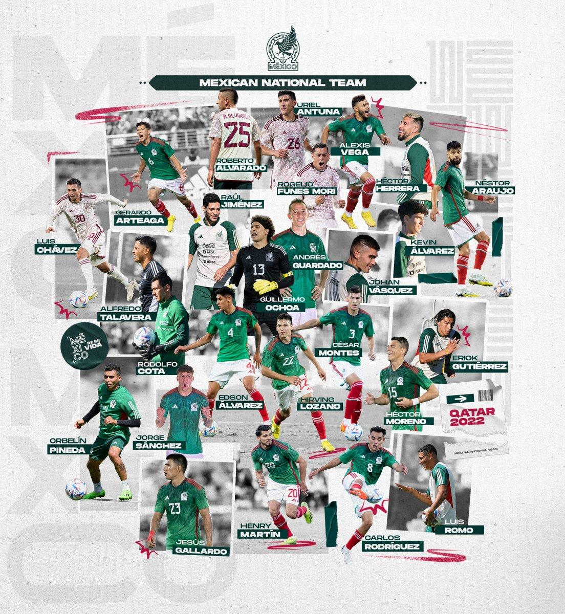

El Tri Fan Page
History
Qatar 2022 World Cup
Roster
Home
Mexico's Roster

The 26 players that will represent Mexico on the big stage!
World Cup Roster
GOALKEEPER
Guillermo Ochoa #13 37, 6'0, 167 lbs Club America (MEX)
Alfredo Talavera #1 40, 6'2, 180 lbs FC Juarez (MEX)
Rodolfo Cota #12 35, 6'0, 187 lbs Club Leon (MEX)
DEFENDER
Hector Moreno #15 34, 6'1, 176 lbs Monterrey (MEX)
Jesus Gallardo #23 28, 5'9, 160 lbs Monterrey (MEX)
Nestor Araujo #2 31, 6'2, 191 lbs Club America (MEX)
Cesar Montes #3 25, 6'3, 154 lbs Monterrey (MEX)
Jorge Sanchez #6 24, 5'8, 156 lbs Ajax (NED)
Gerardo Arteaga #18 24, 5'8, 134 lbs Genk (BEL)
Johan Vasquez #5 24, 5'11, 158 lbs Cremonese (ITA)
Kevin Alvarez #8 23, 5'8, 138 lbs Pachuca (MEX)
MIDFIELDER
Andres Guardado #18 36, 5'6, 132 lbs Real Betis (SPA)
Hector Herrera #16 32, 6'0, 176 lbs Houston Dynamo (USA)
Edson Alvarez #4 25, 6'1, 158 lbs Ajax (NED)
Orbelin Pineda #11 26, 5'6, 138 lbs AEK Athens (GRE)
Erik Gutierrez #14 27, 5'9, 154 lbs PSV (NED)
Carlos Rodriguez #8 25, 5'9, 145 lbs Cruz Azul (MEX)
Luis Romo #7 27, 5'11, 185 lbs Monterrey (MEX)
Luis Chavez #0 26, - -, - - Pachuca (MEX)
FORWARD
Raul Jimenez #9 31, 6'2, 167 lbs Wolves (ENG)
Hirving Lozano #22 27, 5'9, 145 lbs Napoli (ITA)
Uriel Antuna #21 25, 5'8, 134 lbs Cruz Azul (MEX)
Roberto Alvarado #20 24, 5'9, 154 lbs Chivas (MEX)
Henry Martin #20 29, 5'9, 160 lbs Club America (MEX)
Alexis Vega #10 24, 5'8, 169 lbs Chivas (MEX)
Funes Mori #11 31, 6'2, 171 lbs Monterrey (MEX)
 El Tri Fan Page
History
Qatar 2022 World Cup
Roster
Home
El Tri Fan Page
History
Qatar 2022 World Cup
Roster
Home
El Tri Fan Page
History
Qatar 2022 World Cup
Roster
Home
El Tri Fan Page
History
Qatar 2022 World Cup
Roster
Home